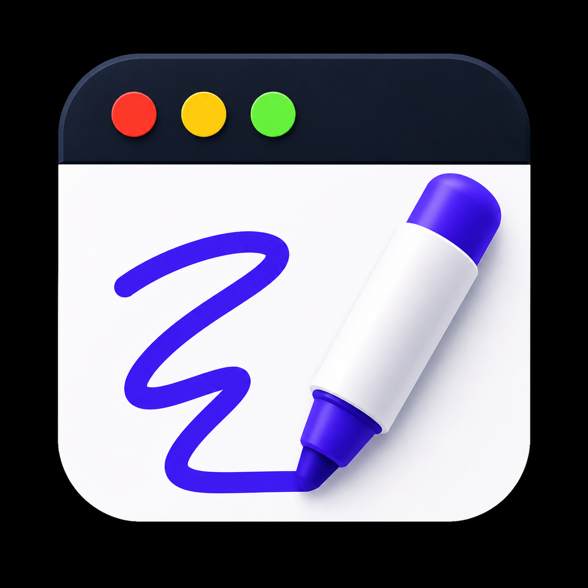
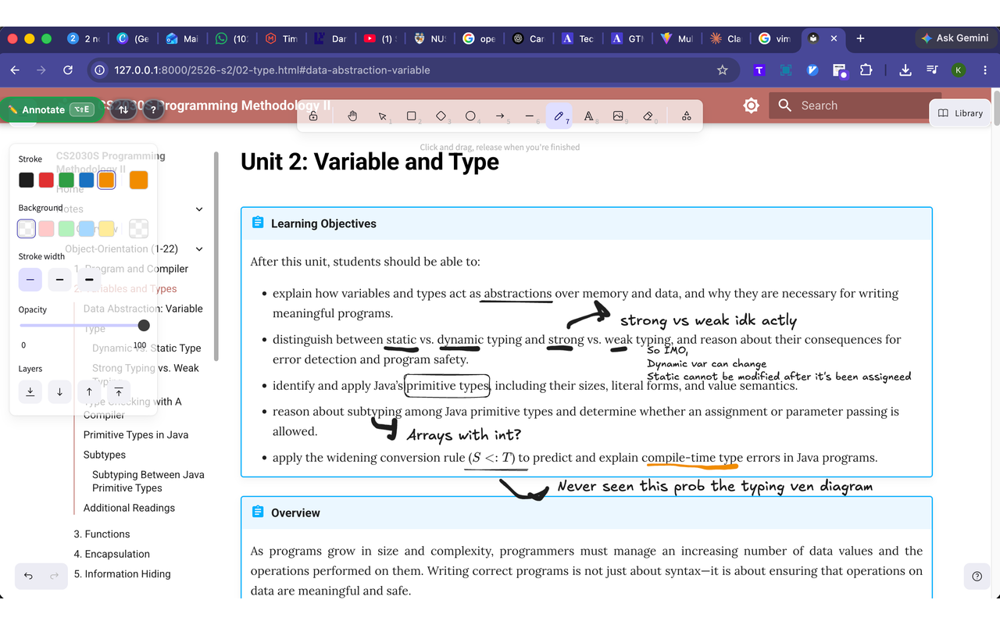

Copy drafted from the SEO brief and marked for your review. All three carry the same content — hero, what you can do, who it's for, how it's different, origin story, footer — styled three ways. Pan / zoom the canvas to compare. Reference an option by its id in chat.

Overlay NotesA transparent, Excalidraw-style sketch canvas on top of any website. Handwrite over what you're reading — notes pin to the content, scroll with the page, and save locally per URL.

Anyone who marks up what they read — arrows, question marks, "wait, why?" — right on the page.
Freehand marker, shapes, arrows and text — right on the live page.
Built while cramming for NUS CS2030 (Programming Methodology II). I wanted to scribble on lecture notes in the browser the way I do on paper — arrows, question marks, "wait, why?" — so I made a marker that lives on top of the web.
A transparent, Excalidraw-style sketch canvas over any website. Your notes scroll with the page and save locally per URL.
For students, researchers, self-learners and devs reading docs.
Built while cramming for NUS CS2030 (Programming Methodology II). I wanted to scribble on lecture notes in the browser like on paper — so I built the marker that lives on top of the web.
A transparent, Excalidraw-style sketch canvas on top of any website. Handwrite over what you're reading — notes pin to the content, scroll with the page, and save locally per URL.
For students, researchers, self-learners and developers reading docs.
Built while cramming for NUS CS2030 (Programming Methodology II). I wanted to scribble on lecture notes in the browser the way I do on paper — so I made a marker that lives on top of the web.
Try next: "flesh out 1a into the full page" · "make 1b the hand-drawn headline from 1a" · "add the FAQ + privacy sections" · "make the hero interactive — let me draw on it"